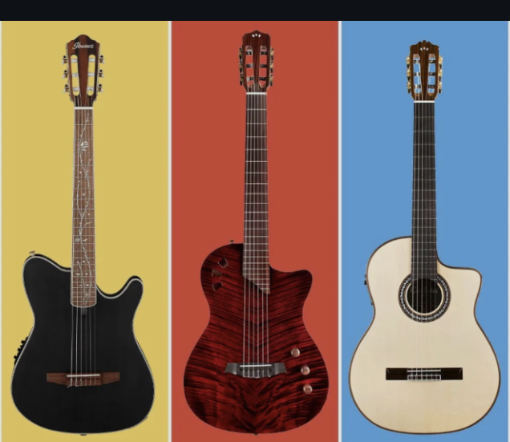

Hobbies
I enjoy playing the classical guitar because it produces a calm and beautiful sound that is different from many other instruments. The soft nylon strings create a warm tone that makes the music relaxing to listen to. When I play classical guitar, I feel focused and peaceful because the music requires patience, control, and practice. I also like how classical guitar music can express many emotions, from gentle and slow melodies to faster and more exciting pieces. Learning new songs and improving my technique gives me a sense of achievement, which is why classical guitar is one of my favourite instruments. 🎸


Jujutsu infinite
I enjoy playing Jujutsu Infinite on Roblox because it is exciting and keeps me entertained. The game is fun because I can explore different abilities, fight enemies, and improve my character as I progress. I like how each battle requires skill and strategy, which makes the game challenging but enjoyable. Another reason I like playing it is that I can play with friends and experience the adventure together. The unique powers and fast-paced action make the game interesting, which is why I enjoy spending time playing it. 🎮